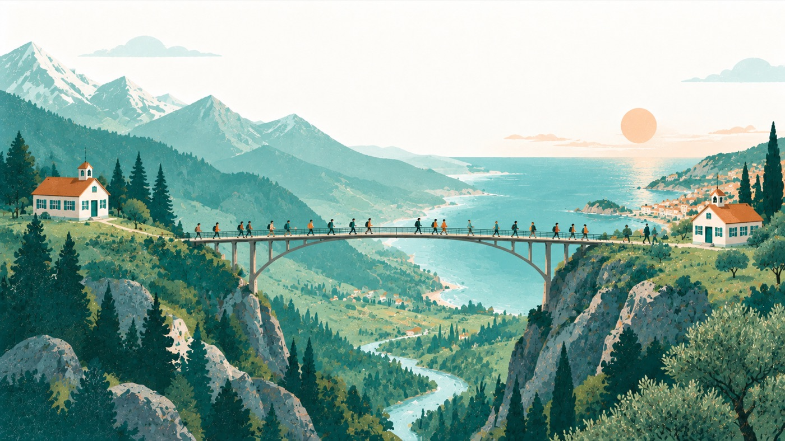
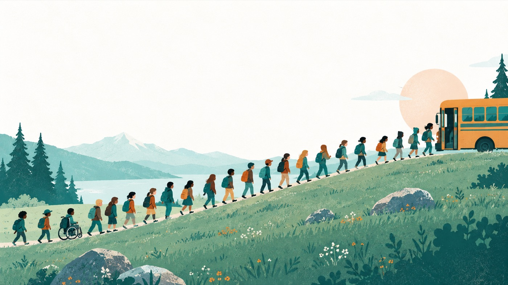
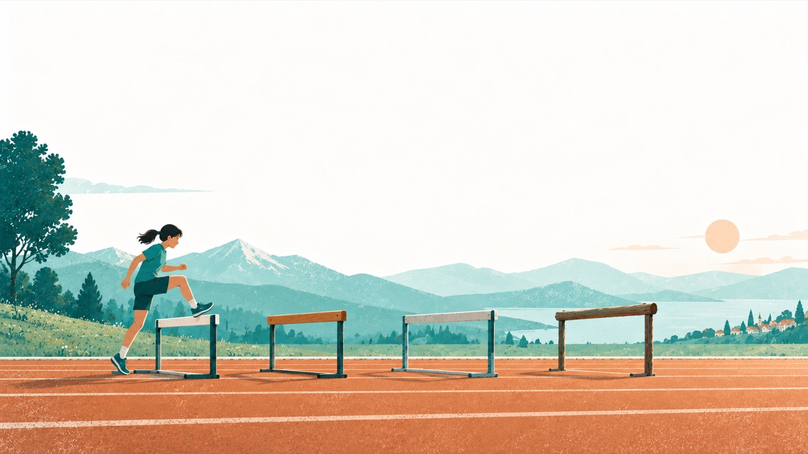
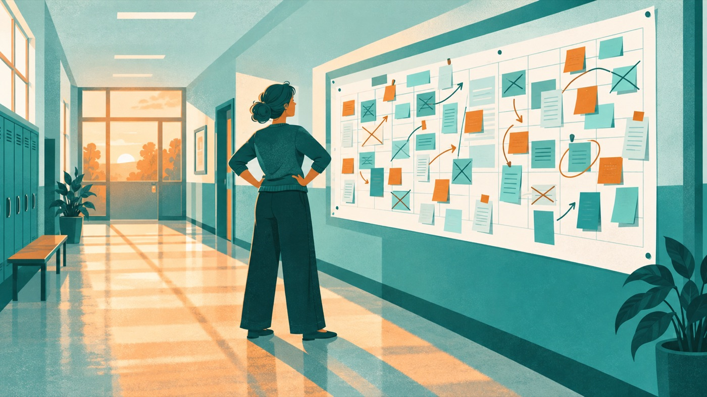

NÖMS Hirtenberg · Digitale Mappe
Wie wir mit 120 Kindern und ohne Extrabudget nach Italien gekommen sind. Und wie Sie das auch schaffen.
In ganz Niederösterreich gibt es zwei Mittelschulen mit Erasmus+. Im Süden des Landes hat kaum eine Schule das Programm überhaupt beantragt.
Das liegt fast nie daran, dass Anträge abgelehnt werden. Es liegt daran, dass kaum jemand antritt, weil das Ganze von außen nach Brüssel, Formularen und Fachpersonal aussieht. Wir sind eine Schule mit 120 Kindern im Triestingtal, ohne Projektstelle und ohne eigenes Budget dafür. Wenn es bei uns geht, geht es bei Ihnen auch.
Auf dieser Seite steht, was wir gemacht haben, in welcher Reihenfolge, und an welchen vier Stellen es bei uns fast gescheitert wäre.

Der letzte Punkt ist uns wichtig, weil er zeigt, wie wir arbeiten. Gastfamilien kann nicht jede Schule organisieren, einen Turnsaal hat jede. Wir machen es mit dem, was wir haben.
Für die meisten Schulen ist Erasmus+ eine Belohnung.
Bei uns ist es ein
Ausgleich.
Der Normalfall bei Auslandsfahrten ist Auswahl. Es fahren die Guten, die Motivierten, die, deren Eltern es sich leisten können. Wer ohnehin schon viel gesehen hat, sieht noch mehr.
Wir haben es umgedreht. Bei uns war es für manche Kinder das erste Mal so weit weg von zuhause. Genau die wären bei einem Auswahlverfahren nicht dabei gewesen, und genau für die hat sich der ganze Aufwand gelohnt.

In der Reihenfolge, in der wir es gemacht haben. Die Namen der Formulare ändern sich gelegentlich, der Ablauf nicht.
Jede Schule braucht eine eigene Organisations-ID, bevor sie etwas beantragen kann, dazu ein EU-Login für die Person, die den Antrag schreibt. Das ist Verwaltung, kein Projekt, und schnell erledigt. Viele Schulen sind übrigens schon registriert, ohne es zu wissen.
Für den Einstieg gibt es die Kurzfristigen Projekte, ausdrücklich gedacht für Schulen ohne Erasmus-Erfahrung. Wer dauerhaft dabei sein will, beantragt einmal eine Akkreditierung und bekommt danach jährlich Mittel, ohne jedes Mal ein neues Projekt schreiben zu müssen.
Für Schulleitungen der wichtigste Satz auf dieser Seite: Mit Akkreditierung ist der große Antrag einmalig, nicht jährlich.
Nicht die erste, die zusagt, sondern eine mit ähnlichen Schwerpunkten. Das entscheidet später darüber, ob aus dem Austausch ein gemeinsames Vorhaben wird oder zwei parallele Ausflüge. Die Suche braucht Geduld. Hilfe dabei bietet die European School Education Platform der EU, auf der Schulen gezielt nach Partnern suchen.
Er ist umfangreich, aber nicht schwierig. Man beschreibt, was man vorhat, warum, und was die Kinder davon haben. Eingereicht wird einmal im Jahr, im Februar. Die Nationalagentur OeAD berät kostenlos und bietet vor der Abgabe einen kurzen Check des Entwurfs an. Dieses Angebot sollte man nutzen.
Hier entscheidet sich, ob es eine Belohnung oder ein Ausgleich wird. Die vier Stellen, an denen es hängt, stehen im nächsten Abschnitt.
Die konkreten Fristen, Formularbezeichnungen und Fördersätze ändern sich von Jahr zu Jahr. Verlassen Sie sich dafür auf erasmusplus.at und nicht auf diese Seite. Was hier steht, ist unsere Erfahrung mit dem Ablauf.

Der Antrag ist nicht das Schwierige. Schwierig wird es an dem Tag, an dem man den Eltern erklärt, dass wirklich alle mitfahren. Diese vier Stellen sind es, an denen es bei uns fast gescheitert wäre.
Welche Familie hätte das nicht zahlen können, und wie löst man das, ohne dass das Kind es merkt?
Indem niemand zahlen musste. Reise, Unterkunft und Programm waren über die Förderung gedeckt, es gab keinen Elternbeitrag. Damit stellt sich die Frage, wer es sich leisten kann, gar nicht erst, und kein Kind muss wissen, wie es bei den anderen zuhause aussieht.
Wichtig war, das den Eltern früh und deutlich zu sagen. Die Sorge vor den Kosten war bei vielen Familien der erste Grund, innerlich abzusagen.
Kinder mit sonderpädagogischem Förderbedarf, mit Beeinträchtigung, mit Medikamenten, mit Angst vorm Weggehen. Was muss man organisieren, damit es trotzdem geht?
Man plant die Reise vom Kind aus, das am meisten Unterstützung braucht, nicht vom Durchschnitt. Bei uns hieß das: ein eigener Bus statt Zug, weil mehrmaliges Umsteigen nicht für alle machbar gewesen wäre. Ein barrierefreies Quartier ohne Stiegen, mit Wohneinheiten, in denen eine Betreuungsperson nebenan schlafen kann. Sonderpädagogisch ausgebildete Begleitung, eine feste Zuständigkeit für Medikamente, und ein Auto vor Ort für den Fall, dass es schnell zum Arzt gehen muss.
Was davon für die einen Kinder notwendig ist, macht die Reise für alle anderen ruhiger.
Wie geht es Kindern, die zuhause nicht Deutsch sprechen? Und was bedeutet eine Auslandsfahrt für ein Kind, das selbst Migrationserfahrung hat?
Die Sprache wurde nicht in einem eigenen Kurs gelernt, sondern nebenbei in allen Fächern: italienische Wörter in Geografie, Lieder in Musik, Gerichte in Ernährung und Haushalt. Dazu kamen zweisprachige Steckbriefe für die Partnerkinder und Übersetzungs-Apps vor Ort.
Kinder, die noch nie in einem anderen Land waren, wurden gezielt vorbereitet: was sie erwartet, wie ein Tag abläuft, wen sie jederzeit fragen können.
Welche Eltern wollen zuerst nicht, und was stimmt sie um?
Nicht mit einem Brief, sondern im Gespräch. Es gab Elternabende, bei denen das Projekt ausführlich vorgestellt wurde, und für Familien, die zögerten, Einzelgespräche. Eltern müssen wissen, wer ihr Kind begleitet, wo es schläft, wie sie es jederzeit erreichen und was im Notfall passiert.
Ehrlicherweise war das Überzeugungsarbeit, und sie hat Zeit gebraucht.
Nach unserer Erfahrung ist die letzte die härteste, und sie ist zugleich die, über die man von anderen Schulen am wenigsten erfährt.

Wir schreiben das hin, weil Berichte, in denen alles glatt läuft, niemandem weiterhelfen. Wer wissen will, ob er sich das zutrauen kann, braucht die Stellen, an denen es gehakt hat.
Wir sind ansprechbar. Wenn Sie an Ihrer Schule überlegen, Erasmus+ anzugehen, und eine Frage haben, die sich schneller im Gespräch klärt als per Formular, schreiben Sie uns.
Genau dafür gibt es diese Seite: damit die nächste Schule nicht bei null anfangen muss.